Final project

Description
This is how me and my team made a 3D printer as a final project for this class.
Video of the process
Here you can see step by step how we designed and made the printer.
Research and ideas
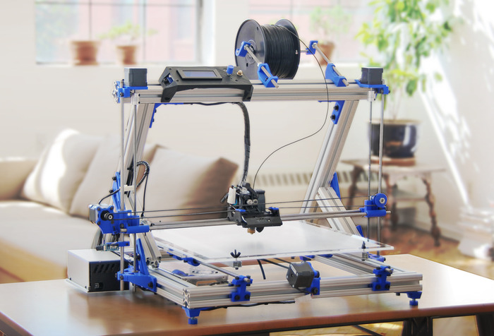After hours of research we came to the conclusion of building our own 3D printer. We all have some experience with 3D printing and 3D modeling, both in SolidWorks and Inventor. We found a good video about how to build your own 3D printer and decided to implement the idea. We had an old Makerbot from FabLab that we could disassemlbe for parts.
Disassembling an old 3D printer
We took the MakerBot appart, found and evaluated what we could use.
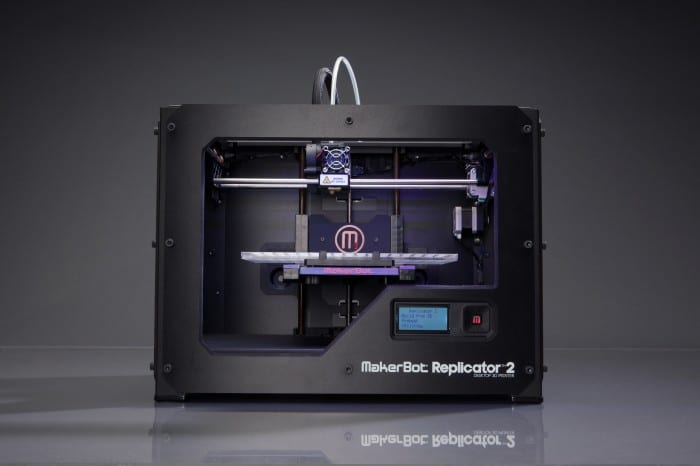We had 4 stepper-motors, 6 pieces of 8mm smooth rods and linear ball bearings, timing belt and pulleys. We also had Arduino Mega board that we could use for this project. That meant that we had to order some parts for the project. We ordered SMPS, T8 threaded rod, hot end and a shield for Arduino Mega (RAMPS 1.4).
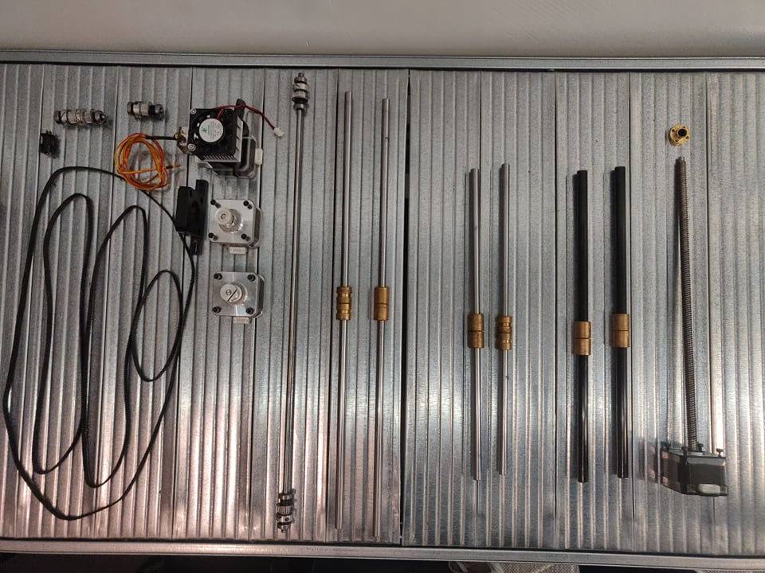Problems with orders
We had prepared an order from Amazon that was supposed to be delivered within 5 work days. To replace the order we had to make a new order from Banggood. com and it was promised to be delivered no later than April 20th. As it turned out the order will not arrive before May 17th. We had ordered extruder, hotend, hotbed, threaded rods, RAMPS 1.4, Arduino Mega, Power Supply and more so it was devastating news.
However we were able to acquire all the parts that we needed. The biggest problem was getting the RAMPS 1.4 shield for Arduino Mega, but we were able to order it from Denmark, with a hotend and had it delivered within 4 days.
Designing 3D parts for assembly
We used SolidWorks to create all parts that we needed to 3D print and made them compatable with the parts from the old Makerbot.
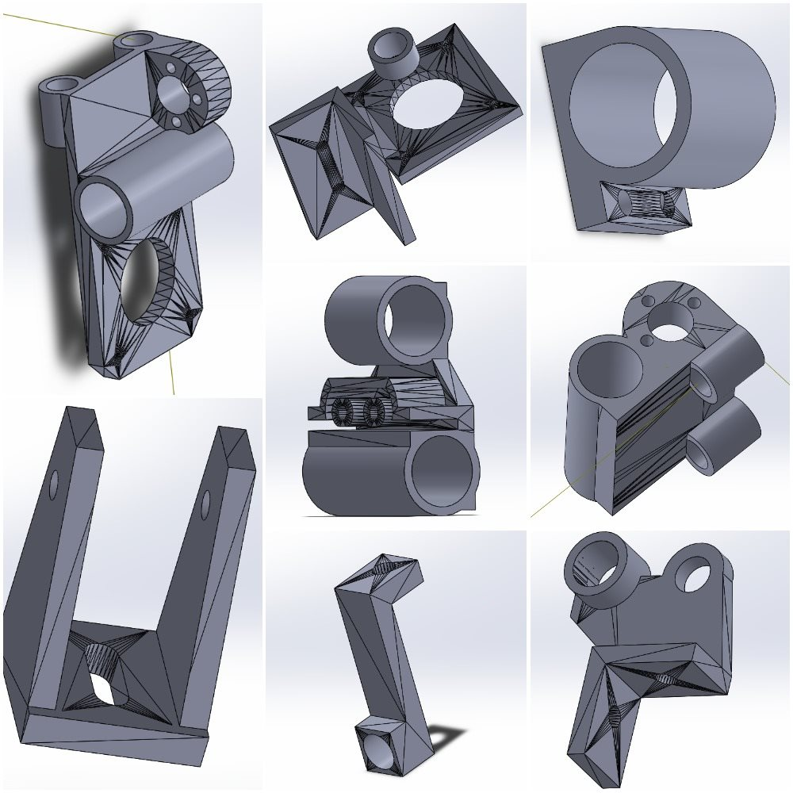Then we prepared them for printing in Cura for Ultimaker 3.
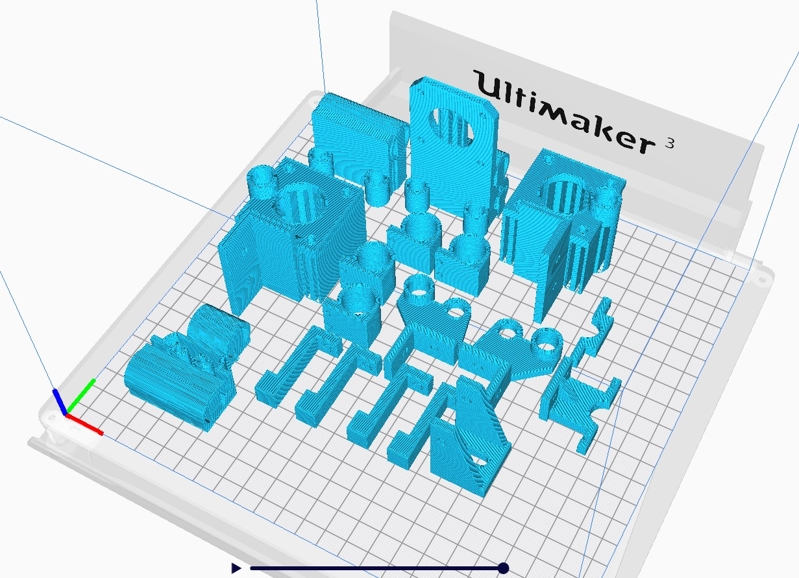3D assembly for the printer
We used SolidWorks to create a 3D model of the printer with assembly from all the parts.
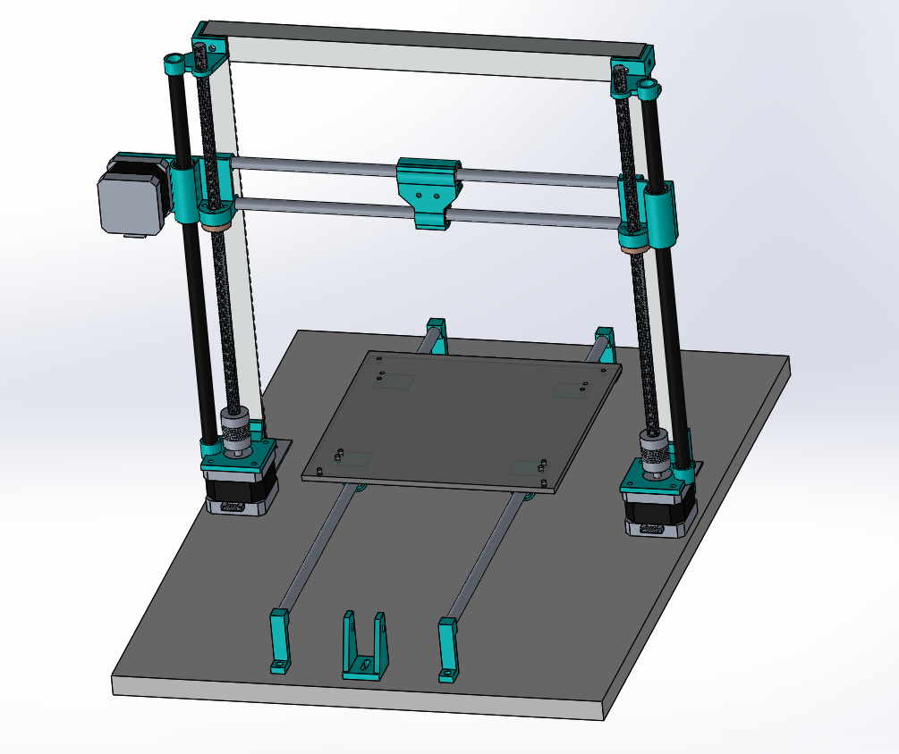We also made an exploded view drawing with bill of materials.
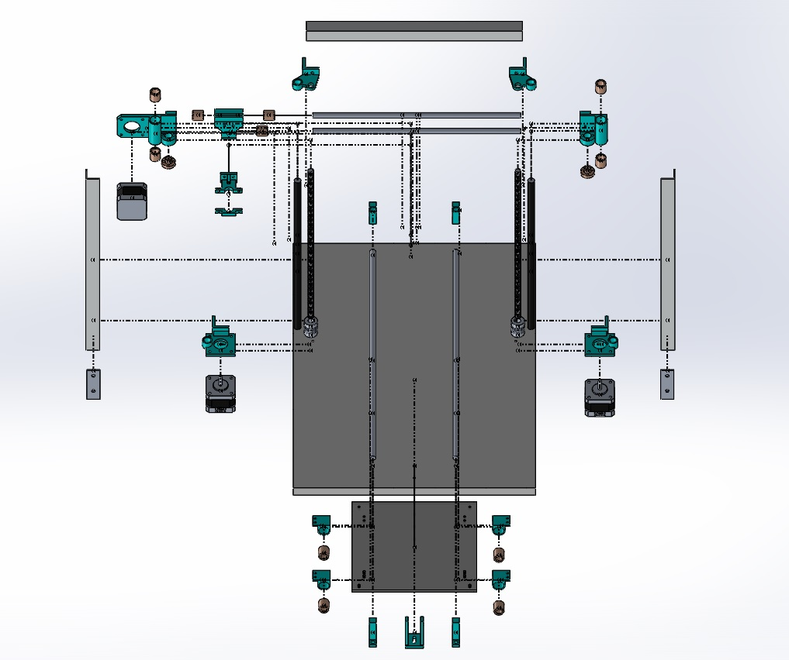 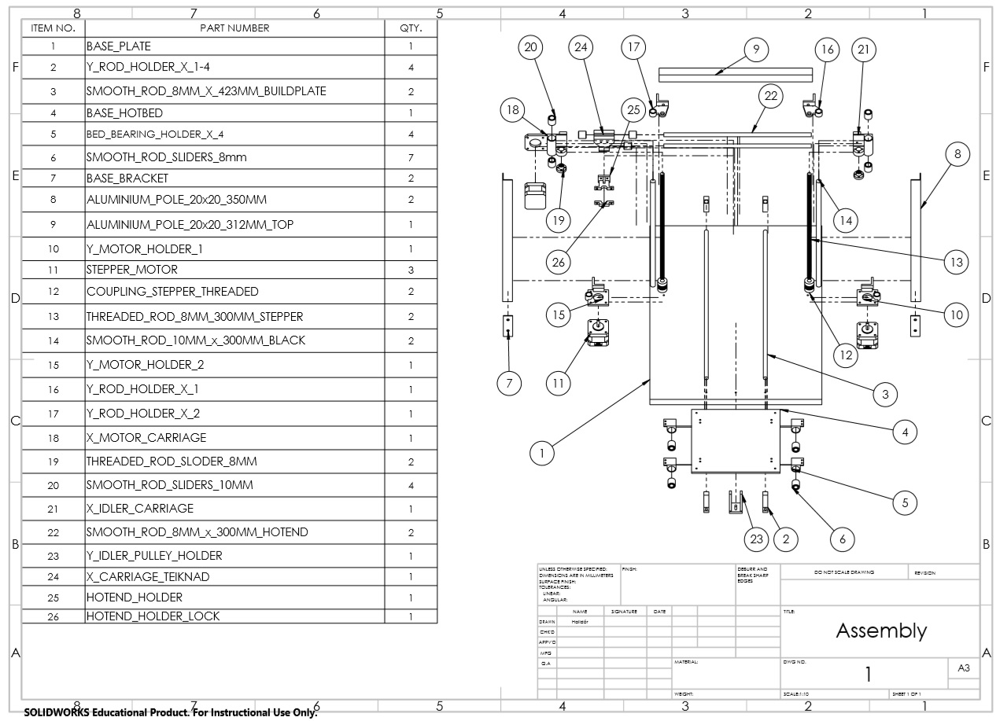Assembly of the printer
We assembled all the 3D printed parts with the mechanical parts that we had from the old Makerbot.

And here you can see the printer assembled without connecting cables.
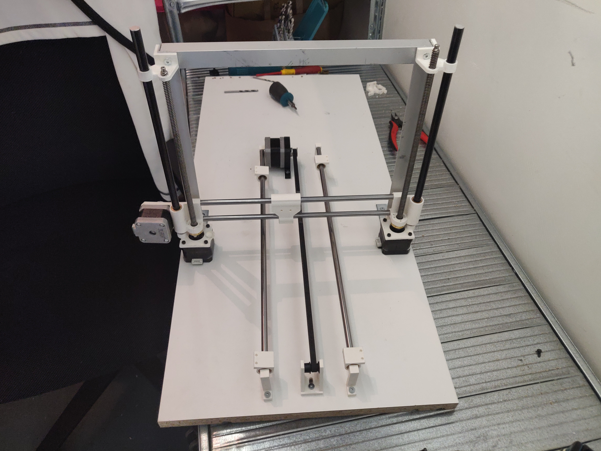Connections
Here you can see all the connections for the printer.The RAMPS 1.4 shield, that you can see in the middle of the image below, is mounted on Arduino Mega board that is connected and controlled by Raspberry PI. The Ardionp Mega and the Raspberry PI are simply connected by USB-cable.
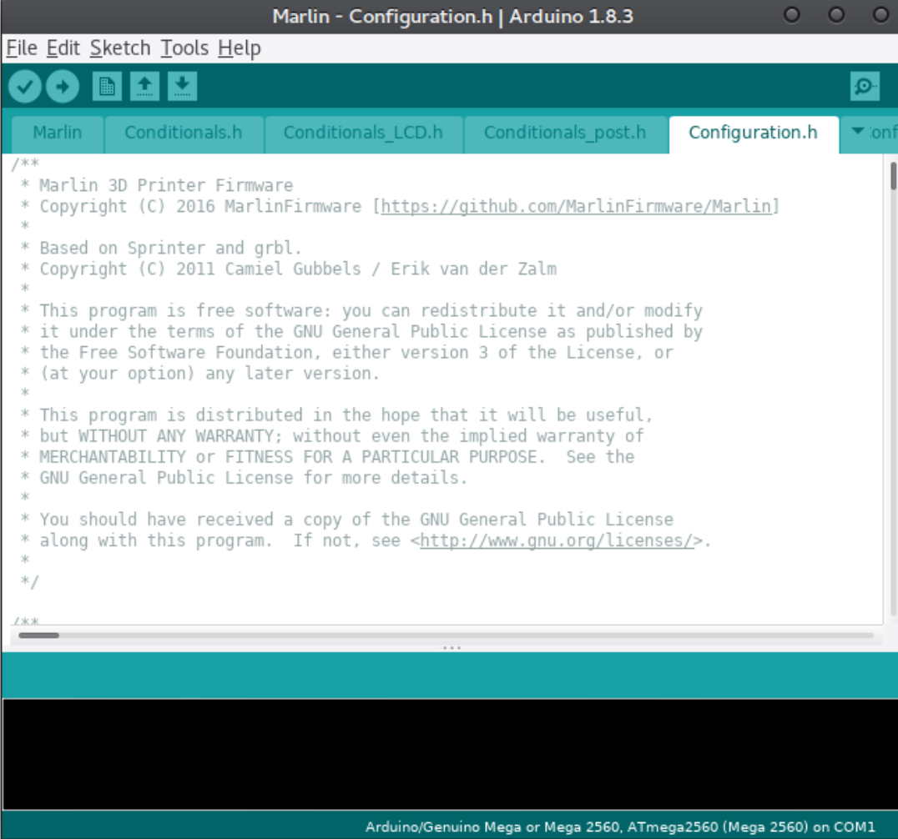Software
We used Marlin firmware to program the Arduino Mega board. Marlin is an open source firmware primarily designed for RepRap project based FDM (Fused Deposition Modelling) 3D-printers using the Arduino platform. Most home made 3D printer utilize this firmware so we decided to do the same. We used the Arduino IDE application to upload the program on to the board. But first we had to make some modifications to the Marlin code.
We made the design of the 3D printer with the Marlin firmware in mind so the modifications to the base code would be minimal. There were still some modifications that had to be made.
The default configurations for the axis movements were 80 steps per mm for the X and Y axises and 4000 steps per mm for the Z-axis. We would need to calculate these values for our 3D-printer.
Each of these values is calculated separately. For our belt driven axes (X and Y), the steps per unit is determined by the number of steps per revolution divided by the idler teeth, divided by the belt pitch (ie the spacing between teeth).
For threaded rod driven axes (our Z-axis), steps per unit is calculated as steps per revolution divided by the pitch of the rod. We used informations from the link below for calculatuins.
For geared extruders, the calculation is steps per revolution times the gear ratio divided by the pinch wheel diameter times pi.
User interface
The user interface most commonly used with the Marlin firmware is Printrun found at the Pronterface website. Pronterface is a GUI host for 3D printing: It can manage your printer as well as prepare, slice, and print your STL files. As such, you can use its graphic environment to easily configure and control your 3D printer through a USB cable. We used this software but our intention was to make modifications to it and calibrate it to our own user interface. We did not make it that far.
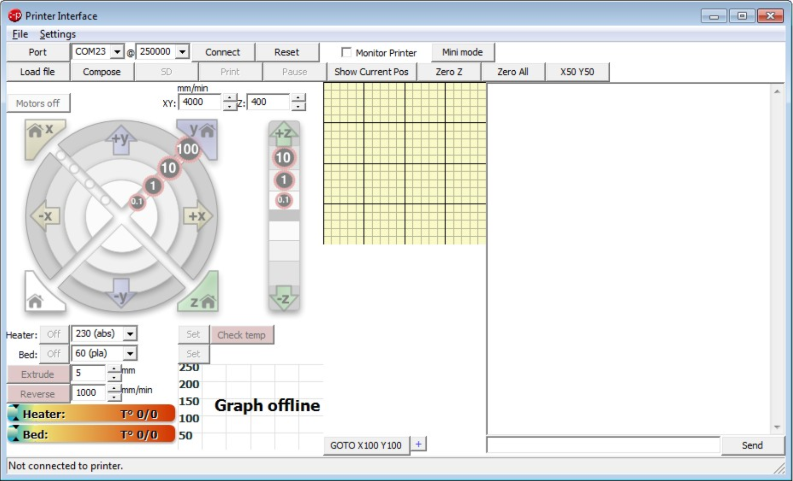Inbuilt designs
We had the idea to implement inbuilt, user-friendly, designs so that people who have access to the printer can print things they might need. It is a simple solution that allows everyone to use the printer in specific and usefull way.